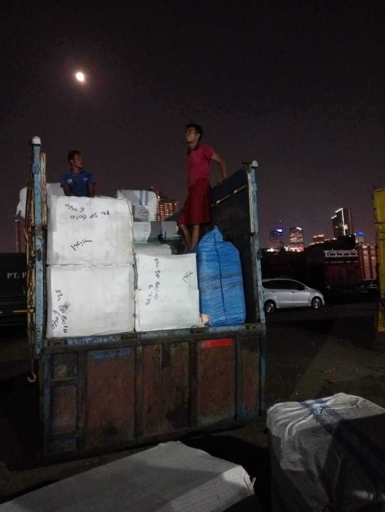
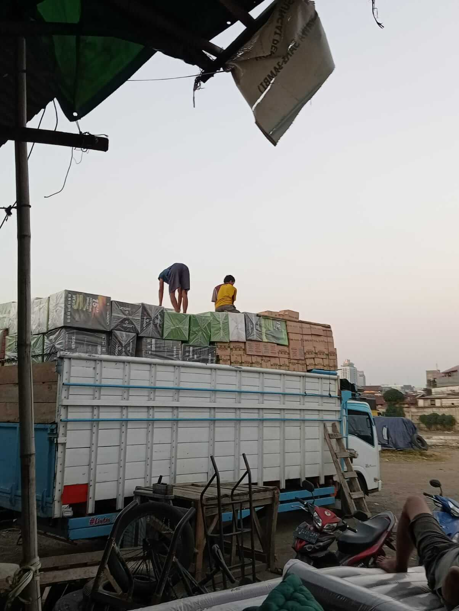

Selamat datang di PT Ras Express Logistik

Selamat datang di PT Ras Express Logistik

Integritas dan pencapaian hasil merupakan prinsip panduan PT. Ras
Logistik Express, berdasarkan pengalaman internal dan pelajaran yang
kami ambil dari perusahaan-perusahaan terkemuka....
Para staf kami berkomitmen untuk memberikan dampak bisnis
yang signifikan dan berkelanjutan sambil menjunjung tinggi standar
etika profesional yang tinggi. Hal ini berarti bahwa setiap tugas yang
kami emban menghasilkan dampak yang berarti secara finansial dan juga
dari perspektif strategis jangka panjang.
Nilai-nilai yang telah disebutkan juga mengajarkan kami untuk menjaga
keseimbangan antara kehidupan profesional dan pribadi. Tim kami
bekerja dengan tekun, namun tetap memprioritaskan tanggung jawab
keluarga. Mereka diasah untuk menjadi individu yang berambisi dan
penuh keyakinan, namun tetap rendah hati dan terbuka terhadap kritik
konstruktif terkait kualitas produk dan layanan kami. Kami menyadari
bahwa klien memilih kami bukan hanya karena kecakapan profesional kami
dalam menyediakan produk dan layanan berkualitas tinggi, tetapi juga
karena nilai-nilai yang kami anut.
Mewujudkan perusahaan berskala nasional dengan kualitas perusahaan skala internasional, dan dapat dipercaya serta di handalkan karena pelayanan serta tanggungjawab yang tinggi untuk memegang teguh kepercayaan dari pelanggan.
“Trust Me” Service your logistics safely, ontime, reliably and Perfect Condition. Terdepan Bersama Kami
Dewan Direksi
Dewan Komisaris
Komisaris
Yang sudah menggunakan jasa kami